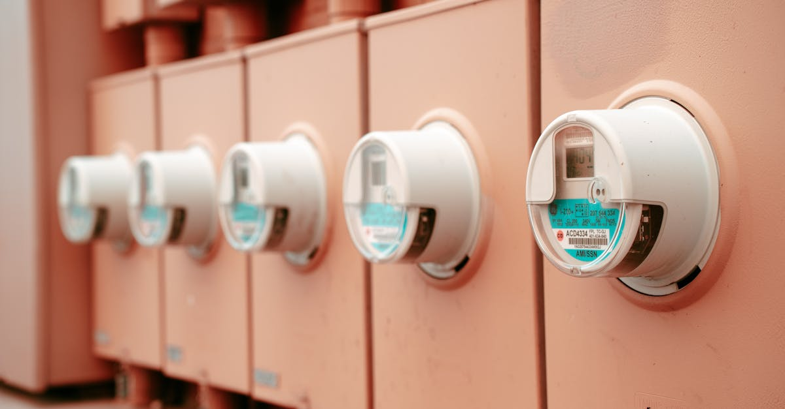

La Pression Énergétique des Centres de Données : Un Catalyseur Inattendu
Le monde numérique est gourmand en énergie. Les centres de données, ces temples modernes abritant nos informations et alimentant notre vie connectée, sont au cœur d'une demande électrique croissante qui ne cesse de s'intensifier. Aux États-Unis, cette soif d'électricité, largement stimulée par l'essor de l'intelligence artificielle et du cloud computing, devrait entraîner une augmentation de la consommation de près de 20% au cours de la prochaine décennie. C'est un chiffre vertigineux qui pose un défi majeur pour les infrastructures énergétiques existantes. Face à cette perspective, les acteurs du marché, des fournisseurs d'énergie aux investisseurs, cherchent activement des solutions durables et fiables. L'enjeu n'est plus seulement de répondre à la demande, mais de le faire de manière responsable, en limitant notre empreinte carbone. L'innovation devient donc une nécessité absolue. L'idée que la chaleur, une ressource abondante et souvent sous-estimée, puisse jouer un rôle clé dans cet équilibre énergétique commence à faire son chemin. Mais comment exploiter cette énergie omniprésente et pourtant invisible ? La réponse pourrait bien se trouver sous nos pieds, dans les profondeurs de la Terre. Cette prise de conscience collective ouvre la voie à des investissements audacieux et à des technologies de pointe, redéfinissant ainsi le paysage énergétique de demain. Dans ce contexte, l'optimisation de chaque kilowatt-heure devient primordiale, un principe que les agents d'épargne intelligents commencent à intégrer dans leurs stratégies.
👉 À lire : Fertilisants bas carbone : la guerre crée des opportunités

La Géothermie : Une Source d'Énergie Ancienne Réinventée
Longtemps associée aux régions volcaniques et aux sources chaudes, la géothermie, cette énergie puisée au cœur de notre planète, connaît un regain d'intérêt spectaculaire. Les avancées technologiques, inspirées des techniques d'extraction pétrolière et gazière, notamment la fracturation hydraulique (fracking), permettent aujourd'hui d'accéder à cette ressource thermique dans des zones géographiques bien plus étendues que par le passé. Il ne s'agit plus de dépendre uniquement des émanations naturelles de chaleur, mais de pouvoir, grâce à des forages profonds et des méthodes d'extraction innovantes, libérer l'énergie thermique contenue dans des roches chaudes et sèches, même loin des zones traditionnellement propices. Cette capacité à débloquer le potentiel géothermique partout sur le territoire transforme radicalement la donne. Des entreprises pionnières explorent de nouvelles méthodes pour injecter de l'eau dans des réservoirs rocheux profonds, la chauffer grâce à la température terrestre, puis la remonter pour produire de l'électricité. Les défis techniques restent importants, mais les progrès sont fulgurants. L'idée est de pouvoir créer des boucles fermées où l'eau circule, se réchauffe et génère de l'énergie de manière continue et renouvelable. C'est une révolution silencieuse qui se prépare, une transition vers une production d'énergie plus locale, plus stable et moins dépendante des aléas climatiques ou géopolitiques. Cette nouvelle ère de la géothermie offre des perspectives fascinantes pour les investisseurs cherchant des actifs tangibles et à fort potentiel de croissance, tout en participant à la transition énergétique mondiale.
👉 À lire : Pétrole : L'ombre du conflit irakien plane sur vos investissements
L'Afflux de Capitaux Privés : Un Vote de Confiance pour la Géothermie de Nouvelle Génération
Le potentiel de la géothermie moderne n'a pas échappé aux investisseurs avisés. Depuis 2021, le secteur a vu un afflux massif de capitaux privés, dépassant la barre impressionnante de 1,5 milliard de dollars. Cet engouement témoigne d'une confiance renouvelée dans cette technologie et de sa viabilité économique à long terme. Ces fonds ne sont pas simplement spéculatifs ; ils sont dirigés vers des projets concrets, des recherches avancées et le développement de nouvelles techniques d'extraction et de production. Des entreprises comme Ormat, un acteur historique et reconnu dans le domaine de la géothermie, et Sage Geosystems, une société innovante spécialisée dans les solutions d'extraction avancées, sont à l'avant-garde de cette révolution. Leur partenariat stratégique vise à accélérer la mise en œuvre de projets commerciaux d'envergure, avec des objectifs clairs : mettre en service des centrales géothermiques performantes d'ici 2027. Ce calendrier ambitieux souligne la maturité de la technologie et la volonté du secteur de passer rapidement de la phase de recherche et développement à la production à grande échelle. L'injection de ces sommes considérables par le capital-risque et les fonds d'investissement privés signale une reconnaissance du potentiel de la géothermie comme une source d'énergie fiable, constante et potentiellement très rentable. C'est une validation du marché qui encourage l'innovation continue et la réduction des coûts de production. Pour l'investisseur individuel, cela ouvre la porte à des opportunités de diversification dans un secteur d'avenir, où l'automatisation et l'IA pourraient jouer un rôle croissant dans l'optimisation des opérations et la rentabilité des projets.

Les Avantages Incontestables de la Géothermie Moderne
La géothermie présente une panoplie d'avantages qui la positionnent comme une solution énergétique particulièrement attrayante pour l'avenir. Contrairement aux énergies solaires et éoliennes, qui sont par nature intermittentes et dépendent des conditions météorologiques, la géothermie offre une production d'électricité constante et fiable, 24 heures sur 24, 7 jours sur 7. Cette base load, cette alimentation électrique stable, est cruciale pour la stabilité du réseau électrique et pour répondre aux besoins énergétiques continus, y compris ceux des centres de données qui exigent une disponibilité maximale. De plus, l'empreinte au sol des installations géothermiques est généralement bien plus réduite que celle des parcs solaires ou éoliens de capacité équivalente. Cela minimise l'impact visuel et environnemental sur les paysages. L'énergie géothermique est également une source d'énergie propre. Les émissions de gaz à effet de serre sont considérablement réduites, voire nulles pour certaines technologies, comparées aux énergies fossiles. Les nouvelles techniques d'extraction visent à minimiser également l'impact sur les nappes phréatiques et les risques sismiques, bien que la vigilance reste de mise. La ressource elle-même est virtuellement inépuisable à l'échelle humaine, car elle provient de la chaleur interne de la Terre. Enfin, la géothermie permet une production d'énergie locale, réduisant la dépendance aux importations de combustibles fossiles et renforçant la sécurité énergétique des nations. Ces atouts combinés font de la géothermie une pièce maîtresse potentielle dans la transition énergétique mondiale, une opportunité d'investissement durable et résiliente.
Défis et Innovations : Surmonter les Obstacles Techniques
Malgré son potentiel immense, le développement de la géothermie de nouvelle génération n'est pas sans défis. L'un des principaux obstacles reste le coût initial élevé des forages profonds. Atteindre les réservoirs de chaleur intense peut nécessiter des investissements considérables, rendant les projets moins compétitifs face aux énergies fossiles dont les coûts externes (impact environnemental) ne sont pas toujours pleinement intégrés. La technologie de forage est donc un domaine clé d'innovation. Les techniques empruntées à l'industrie pétrolière et gazière, bien qu'efficaces, doivent encore être adaptées et optimisées pour la géothermie, notamment pour réduire les risques et les coûts. La gestion de l'eau, un élément essentiel dans de nombreux systèmes géothermiques, soulève également des questions. Il faut s'assurer que l'eau extraite est traitée de manière appropriée et que les cycles d'injection et d'extraction sont gérés de manière durable pour éviter l'épuisement des ressources locales ou la contamination. La fracturation hydraulique, bien que permettant d'améliorer la perméabilité des roches et donc le transfert de chaleur, suscite des préoccupations environnementales, notamment concernant la sismicité induite et la consommation d'eau. Les chercheurs travaillent activement sur des alternatives plus sûres et plus écologiques, comme la fracturation thermique ou l'utilisation de fluides moins impactants. L'exploration et la cartographie précise des ressources géothermiques profondes sont également cruciales pour identifier les sites les plus prometteurs et minimiser les risques d'exploration infructueuse. Face à ces défis, l'intelligence artificielle trouve des applications prometteuses, que ce soit dans l'analyse des données sismiques pour mieux cibler les forages, dans l'optimisation des paramètres d'extraction, ou dans la modélisation prédictive de la performance des centrales. Ces avancées technologiques sont essentielles pour débloquer le plein potentiel de la géothermie et assurer sa rentabilité.
Le Rôle de l'IA et de l'Automatisation dans l'Énergie Géothermique
L'intégration de l'intelligence artificielle (IA) et de l'automatisation est en train de transformer le secteur de l'énergie géothermique, le rendant plus efficace, plus sûr et plus rentable. Les agents IA, tels que ceux développés par Epargne IA, sont conçus pour analyser d'énormes volumes de données et prendre des décisions optimisées en temps réel. Dans le contexte géothermique, cela se traduit par plusieurs applications concrètes. Premièrement, l'IA peut analyser les données géologiques et sismiques complexes pour identifier les sites les plus prometteurs pour le forage, réduisant ainsi les risques d'échecs coûteux. Elle peut aider à modéliser avec une précision accrue le comportement des réservoirs souterrains et à optimiser les stratégies d'extraction de chaleur. Deuxièmement, une fois la centrale opérationnelle, les systèmes d'IA peuvent surveiller en continu les performances de l'installation, ajuster les débits, les températures et les pressions pour maximiser la production d'électricité tout en minimisant l'usure des équipements. C'est une forme d'optimisation 24h/24, similaire à celle que nous proposons pour l'épargne et les placements. L'automatisation des processus, guidée par l'IA, permet également de réduire les besoins en personnel sur site, diminuant les coûts d'exploitation et améliorant la sécurité des travailleurs en les éloignant des zones potentiellement dangereuses. L'IA peut aussi jouer un rôle crucial dans la maintenance prédictive, en anticipant les pannes potentielles d'équipements avant qu'elles ne surviennent, évitant ainsi des arrêts de production coûteux et imprévus. L'optimisation de la gestion du réseau électrique, en intégrant la production géothermique stable avec d'autres sources d'énergie renouvelable, est une autre application clé. En somme, l'IA n'est pas seulement un outil d'aide à la décision ; elle devient un élément central de l'efficacité opérationnelle et de la rentabilité des projets géothermiques modernes, rendant cette énergie encore plus attractive pour les investisseurs.
Comment Investir dans la Vague Géothermique ?
Pour l'investisseur particulier désireux de capitaliser sur le potentiel de la géothermie, plusieurs avenues s'offrent, allant de l'investissement direct dans des entreprises cotées à des fonds spécialisés. La voie la plus accessible reste l'achat d'actions d'entreprises publiques actives dans le secteur. Des sociétés comme Ormat Technologies (ORA) sont déjà bien établies et reconnues pour leur expertise dans la conception, la fabrication et l'exploitation de centrales géothermiques. D'autres entreprises, plus axées sur l'exploration et le développement de nouvelles technologies, pourraient offrir un potentiel de croissance plus élevé, mais avec un risque associé plus important. Il est essentiel de mener une analyse financière approfondie de chaque entreprise, en évaluant sa santé financière, son portefeuille de projets, sa stratégie de développement et sa valorisation boursière. Une autre option consiste à investir dans des fonds négociés en bourse (ETF) ou des fonds communs de placement axés sur les énergies renouvelables ou les technologies propres. Bien que ces fonds puissent inclure une diversification au-delà de la seule géothermie, ils offrent une exposition au secteur avec une gestion professionnelle et une diversification intégrée, réduisant le risque spécifique à une seule entreprise. Pour les investisseurs plus sophistiqués ou ayant une tolérance au risque plus élevée, l'investissement dans des fonds de capital-risque ou des plateformes de financement participatif spécialisées dans l'énergie peut être une option. Ces véhicules ciblent souvent des startups innovantes ou des projets en phase de développement, offrant un potentiel de rendement élevé mais comportant aussi des risques significatifs. Quelle que soit l'approche choisie, une gestion rigoureuse du risque et une vision à long terme sont primordiales. L'automatisation de la gestion de portefeuille, par exemple via des robo-advisors ou des stratégies d'investissement algorithmiques, peut aider à construire et à maintenir un portefeuille diversifié et aligné sur les objectifs de l'investisseur, tout en surveillant les opportunités émergentes dans des secteurs porteurs comme la géothermie.
Perspectives d'Avenir : La Géothermie, Pilier Énergétique de Demain ?
L'avenir de la géothermie s'annonce radieux, porté par une conjonction de facteurs favorables : la nécessité impérieuse de décarboner notre économie, la demande énergétique croissante alimentée par la digitalisation, et les avancées technologiques qui rendent cette énergie plus accessible et économique. Les projections indiquent que la géothermie pourrait jouer un rôle bien plus significatif dans le mix énergétique mondial qu'on ne l'imaginait il y a encore quelques années. Des pays comme l'Islande, déjà pionniers, continuent d'innover, mais le potentiel est réel sur tous les continents. L'amélioration continue des technologies de forage, le développement de systèmes géothermiques améliorés (EGS - Enhanced Geothermal Systems) et l'intégration potentielle avec d'autres technologies comme le stockage d'énergie, pourraient décupler la capacité de production mondiale. L'objectif de neutralité carbone fixé par de nombreuses nations d'ici 2050 rend l'investissement dans des sources d'énergie stables et renouvelables comme la géothermie non seulement souhaitable, mais nécessaire. De plus, la stabilité des coûts de production de la géothermie, une fois l'investissement initial réalisé, offre une prévisibilité appréciable par rapport aux marchés volatils des combustibles fossiles. Cela est particulièrement pertinent dans un contexte d'inflation persistante et d'incertitudes géopolitiques. L'optimisation de ces infrastructures grâce à l'IA et à l'automatisation promet de renforcer encore leur attractivité. Pour les épargnants et investisseurs, se positionner tôt sur ce secteur en pleine croissance pourrait s'avérer particulièrement judicieux. C'est une opportunité d'aligner ses investissements avec des valeurs de durabilité tout en recherchant des rendements attractifs. La chaleur sous nos pieds n'est plus une simple curiosité géologique ; elle est en train de devenir une véritable opportunité d'investissement stratégique pour le 21ème siècle.
Conclusion
La montée en puissance de la demande énergétique, exacerbée par l'appétit insatiable des centres de données et de l'IA, pousse le monde à rechercher des solutions d'approvisionnement fiables et durables. La géothermie, autrefois une niche, émerge aujourd'hui comme une force majeure, grâce aux innovations technologiques qui démocratisent son accès. L'injection massive de capitaux privés confirme cette tendance et valide le potentiel économique de cette énergie propre et constante. Les avantages de la géothermie – sa disponibilité permanente, son faible impact environnemental et sa production locale – en font une composante essentielle de la transition énergétique. Si des défis techniques subsistent, les progrès rapides, notamment dans les techniques de forage et la gestion des ressources, ouvrent la voie à une exploitation à grande échelle. L'intelligence artificielle et l'automatisation sont appelées à jouer un rôle clé dans l'optimisation de ces opérations, renforçant leur efficacité et leur rentabilité. Pour les investisseurs, la géothermie représente une opportunité de diversification prometteuse dans un secteur d'avenir. Envisager des investissements dans des entreprises spécialisées, des fonds dédiés ou des projets innovants permet de participer à cette révolution énergétique tout en cherchant à faire fructifier son épargne. Comme pour l'épargne intelligente optimisée par IA, l'investissement dans la géothermie demande une approche stratégique, une analyse rigoureuse et une vision à long terme. C'est une voie prometteuse pour un avenir énergétique plus propre et une gestion financière plus résiliente.